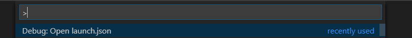
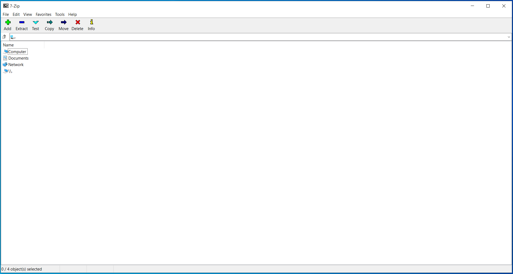
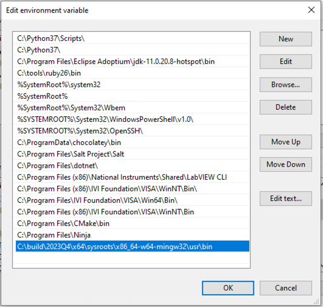

Part 3: Configuring Visual Studio Code for Building NI Linux Real-Time C/C++ Code¶
Table of Contents
Introduction¶
Creating code using Visual Studio Code and the NI Linux Real-Time C/C++ Compiler toolchain starts with the creation and configuration of files that represent a project. As this process is similar for all types of builds that the C/C++ compiler will perform, the initial setup done here can be considered a project template for all types of builds.
Creating Projects¶
Visual Studio Code does not use the idea of a “project” but rather acts on directories or folders and the files within them. That is, instead of opening a special project file Visual Studio Code opens a folder. In addition to this folder concept Visual Studio Code uses workspaces which are configurations used to group multiple top-level “project” folders into one editor window.
Since these tutorials are focused on simple builds and establishing best practices for working with the NI Linux Real-Time C/C++ tools all projects will be single-root workspaces and will not require a workspace configuration file. For more information about configuring workspaces, refer to User and Workspace Settings and Multi-root Workspaces.
To create a new top-level directory with accompanying subdirectories in Visual Studio Code, follow the steps below.
Create a top-level directory to act as the Folder for a VS Code workspace. For example: <My Documents>\HelloWorld\* or *<My Documents>\NI Linux Real-Time Template\.
Launch VS Code.
- In VS Code, select Open folder… from the landing page or File >> Open Folder…

Navigate to and select the folder created previously to open it in VS Code.
- In the VS Code Explorer, create the following folders in the HelloWorld folder using the New Folder button.
src – source code directory
build – build files directory
- Confirm that the directory structure looks as follows:
Creating Tasks and the Command Palette¶
Visual Studio Code allows execution of various commands through the Command Palette which is accessible via the Ctrl + Shift + P shortcut. This opens a list of the various commands and actions that are available to use in a searchable list including extension commands, editor navigation, debugging, and other common development tasks.
In addition to the pre-defined commands, custom commands can be added through Tasks in Visual Studio Code. Tasks allow users to define custom commands through arbitrary external commands. This empowers Visual Studio Code to utilize external tools without requiring direct integration. For example, these tutorials will use CMake and a shell task to call CMake will be created. If desired, such a task could be defined as the default build action as well.
To create custom tasks to interface with the tools selected for these examples and which can be launched from the Command Palette, follow these steps:
In Visual Studio Code, press Ctrl + Shift + P to open the Command Palette.
- In the Command Palette, search for Tasks: Configure Task and select it.
- Select Create tasks.json file from template then select Others. This will create a new folder and file in the project folder: the .vscode directory and that tasks.json file. The directory is the storage location for all project-specific configurations.
The tasks.json file should open automatically, but if not open it from the Explorer. It should include a default “Hello World” type task.
Complete tasks.json as follows. These commands will allow quick usage of the external utilities such as CMake and Ninja directly from Visual Studio Code.
{ // See https://go.microsoft.com/fwlink/?LinkId=733558 // for the documentation about the tasks.json format "version": "2.0.0", "tasks": [ { "label": "CMake Generate Build Files", "type": "shell", "command": "cmake -G Ninja ${workspaceFolder}/build", "options": { "cwd": "${workspaceFolder}/build" }, "problemMatcher": [] }, { "label": "Ninja", "type": "shell", "command": "ninja", "options": { "cwd": "${workspaceFolder}/build" }, "problemMatcher": "$gcc" }, { "label": "clean", "type": "shell", "command": "ninja clean", "options": { "cwd": "${workspaceFolder}/build" }, "problemMatcher": [] } ] }
Note: The “$gcc” problemMatcher value requires the C/C++ Extension and allows Visual Studio Code to report compilation errors in the Problems view. A problemMatcher of [] means that the output is notscanned for errors and terminal output needs reviewed.
Save tasks.json and then close the file in the editor.
Configuring the C/C++ Extension for IntelliSense¶
The C/C++ extension – while in pre-release at the time of writing – is a powerful extension from Microsoft that enables C/C++ IntelliSense features such as autocompletion as well as debugger support and simple build task capabilities. In this section, the necessary configuration file will be created to allow the IntelliSense feature to find compiler includes and other necessary resources.
Open the Command Palette by hitting Ctrl + Shift + P.
- Search for and select C/C++: Edit Configurations (JSON).
- This should automatically create a new file in the .vscode directory: c_cpp_properties.json. The file should also be open in the editor. For more information on c_cpp_properties.json, refer to the official documentation at c_cpp_properties.json reference.
In the editor, modify the configuration for the compiler to be used.
- For NI Linux Real-Time x64 devices, complete the file as follows:
{ "env": { "compilerSysroots": "C:/build/18.0/x64/sysroots/" }, "configurations": [ { "name": "NI Linux Real-Time x64", "compilerPath": "${compilerSysroots}/i686-nilrtsdkmingw32/usr/bin/x86_64-nilrt-linux/x86_64-nilrt-linux-gcc", "compilerArgs": [ "--sysroot=${compilerSysroots}/core2-64-nilrt-linux/" ], "includePath": [ "${workspaceFolder}/" ], "intelliSenseMode": "gcc-x64" } ], "version": 4 }
- For NI Linux Real-Time ARM devices, complete the file as follows:
{ "env": { "compilerSysroots": "C:/build/18.0/arm/sysroots/" }, "configurations": [ { "name": "NI Linux Real-Time ARMv7", "compilerPath": "${compilerSysroots}/i686-nilrtsdkmingw32/usr/bin/arm-nilrt-linux-gnueabi/arm-nilrt-linux-gnueabi-gcc", "compilerArgs": [ "--sysroot=${compilerSysroots}/cortexa9-vfpv3-nilrt-linuxgnueabi/" ], "includePath": [ "${workspaceFolder}/" ], "intelliSenseMode": "gcc-x86" } ], "version": 4 }
Save c_cpp_properties.json, then close the file in the editor.
- Note that the configuration created now shows in the lower-right corner of Visual Studio Code. It’s possible to have multiple configurations in the same file and then switch between them. For example, the above configurations could be extended to create a configuration file that covers both ARM and x64 NI Linux Real-Time devices.
Creating a Debugging Configuration¶
Visual Studio Code uses a configuration file called launch.json to configure the debugger for the environment. With the addition of the C/C++ extension, support for C/C++ debuggers such as the GNU Debugger is added.
This section will create the debug (aka launch) configuration but will not complete it. Each debugging session will have its own specific values depending on the binary that is being debugged. For more information on launch configurations for C/C++ code refer to the Debugging documentation and Configuring C/C++ debugging.
- Hit Ctrl + Shift + P to open the Command Palette, then search for and select Debug: Open launch.json. Then, select C/C++ (GDB). This will create a launch.json with the template structure already present.
Configure the resulting template for the specific toolchain, noting that not all fields are currently completed.
- For NI Linux Real-Time x64 devices, complete the file as follows:
{ "version": "0.2.0", "configurations": [ { "name": "x64 (gdb) Launch", "type": "cppdbg", "request": "launch", "program": "enter program name, for example ${workspaceFolder}/a.exe" , "args": [], "stopAtEntry": false, "cwd": ".", "environment": [], "showDisplayString": true, "MIMode": "gdb", "miDebuggerPath": "C:/build/18.0/x64/sysroots/i686-nilrtsdkmingw32/usr/bin/x86_64-nilrt-linux/x86_64-nilrt-linux-gdb.exe", "miDebuggerServerAddress": "serveraddress:port" } ] }
- For NI Linux Real-Time ARM devices, complete the file as follows:
{ "version": "0.2.0", "configurations": [ { "name": "ARM (gdb) Launch", "type": "cppdbg", "request": "launch", "program": "enter program name, for example ${workspaceFolder}/a.exe" , "args": [], "stopAtEntry": false, "cwd": ".", "environment": [], "showDisplayString": true, "MIMode": "gdb", "miDebuggerPath": "C:/build/18.0/arm/sysroots/i686-nilrtsdkmingw32/usr/bin/arm-nilrt-linux-gnueabi/arm-nilrt-linux-gnueabi-gdb.exe", "miDebuggerServerAddress": "serveraddress:port" } ] }
Save launch.json.
Creating a CMake Build Configuration¶
CMake determines how to generate build files and what specific configurations to use for a given design through scripts called CMakeLists. These are text files with various variables and commands to configure includes, compiler flags, and source files to compile. Since every NI Linux Real-Time compilation will be similar in terms of the compiler path, flags, and base include paths, a template can be made for this as well.
This section will demonstrate some of the basics of creating a CMakeLists.txt file for a project but will not dive into every single setting. Some settings are project specific and will be added later in specific build tutorials instead of here. For more information on the various CMake variables and commands, refer to the official CMake documentation for the version of CMake used on the system. Many of the variables set are required for cross compiling as documented in the CMake Wiki CrossCompiling document.
Note: The below steps assume the 18.0 compiler toolchains and Linux Real-Time images. Paths may differ based on the toolchain and versions used.
In the build directory of the project, create a new file using the New File button. Name the file CMakeLists.txt.
 The first thing needed in the configuration is the specific compiler and search path settings for the NI Linux Real-Time toolchain. Configure the CMAKE_SYSTEM_NAME and CMAKE_SYSTEM_PROCESSOR as shown below. The CMAKE_SYSTEM_NAME should match the output of “uname -s” on the target, and the CMAKE_SYSTEM_PROCESSOR should match the output of “uname -p.”
For NI Linux Real-Time x64 targets:
set(CMAKE_SYSTEM_NAME Linux) set(CMAKE_SYSTEM_PROCESSOR x86_64)
For NI Linux Real-Time ARM targets:
set(CMAKE_SYSTEM_NAME Linux) set(CMAKE_SYSTEM_PROCESSOR armv71)
To make setting paths in other parts of the file easier, it’s possible to use a variable. This is optional but saves the trouble of typing out the full sysroot location each time.
For NI Linux Real-Time x64 targets:
set(toolchainpath C:/build/18.0/x64/sysroots)
For NI Linux Real-Time ARM targets:
set(toolchainpath C:/build/18.0/arm/sysroots)
Next, configure the compilers for both C and C++. CMake will automatically decide which compiler to used based on the files being compiled for a given project.
For NI Linux Real-Time x64 targets:
set(CMAKE_C_COMPILER ${toolchainpath}/i686-nilrtsdk-mingw32/usr/bin/x86_64-nilrt-linux/x86_64-nilrt-linux-gcc.exe) set(CMAKE_CXX_COMPILER ${toolchainpath}/i686-nilrtsdk-mingw32/usr/bin/x86_64-nilrt-linux/x86_64-nilrt-linux-g++.exe)
For NI Linux Real-Time ARM targets:
set(CMAKE_C_COMPILER ${toolchainpath}/i686-nilrtsdk-mingw32/usr/bin/arm-nilrt-linux-gnueabi/armnilrt-linux-gnueabi-gcc.exe) set(CMAKE_CXX_COMPILER ${toolchainpath}/i686-nilrtsdk-mingw32/usr/bin/arm-nilrt-linuxgnueabi/arm-nilrt-linux-gnueabi-g++.exe)
The compiler flags, include directories, and sysroot should all be defined in the script as well. Note that these are the NI recommended compiler flags.
For NI Linux Real-Time x64 targets:
set(CMAKE_SYSROOT ${toolchainpath}/core2-64-nilrt-linux) set(CMAKE_<LANG>_STANDARD_INCLUDE_DIRECTORIES ${toolchainpath}/core2-64-nilrtlinux/usr/include/c++/6.3.0 ${toolchainpath}/core2-64-nilrt-linux/usr/include/c++/6.3.0/x86_64-nilrtlinux) set(CMAKE_<LANG>_FLAGS "-Wall -fmessage-length=0") set(CMAKE_<LANG>_FLAGS_DEBUG "-O0 -g3") set(CMAKE_<LANG>_FLAGS_RELEASE "-O3")
For NI Linux Real-Time ARM targets: .. code:: cmake
set(CMAKE_SYSROOT ${toolchainpath}/cortexa9-vfpv3-nilrt-linux-gnueabi) set(CMAKE_<LANG>_STANDARD_INCLUDE_DIRECTORIES ${toolchainpath}/cortexa9-vfpv3-nilrt-linuxgnueabi/usr/include/c++/6.3.0 ${toolchainpath}/cortexa9-vfpv3-nilrt-linuxgnueabi/usr/include/c++/6.3.0/arm-nilrt-linux-gnueabi) set(CMAKE_<LANG>_FLAGS “-Wall -fmessage-length=0 -mfpu=vfpv3 -mfloat-abi=softfp”) set(CMAKE_<LANG>_FLAGS_DEBUG “-O0 -g3”) set(CMAKE_<LANG>_FLAGS_RELEASE “-O3”)
Note: NI recommends using the -mfpu=vfpv3 -mfloat-abi=softfp flags for ARM targets to improve floating-point operation performance.
Search behavior must be specified to ensure that the compiler doesn’t unnecessarily pull in includes from the host system’s paths. This configuration will be the same for both ARM and x64 NI Linux Real-Time targets.
set(CMAKE_FIND_ROOT_PATH_MODE_PROGRAM NEVER) set(CMAKE_FIND_ROOT_PATH_MODE_LIBRARY ONLY) set(CMAKE_FIND_ROOT_PATH_MODE_INCLUDE ONLY) set(CMAKE_FIND_ROOT_PATH_MODE_PACKAGE ONLY)
Save CMakeLists.txt. Note that the file is currently incomplete and will need to be expanded upon when specifying a build target.
Expanding on the Template¶
While this document acts as a basic setup for cross-compiling for Linux Real-Time devices, Visual Studio Code’s inherent flexibility allows for greater improvements depending on the desired workflow. Some examples of ways to improve on the template project include:
Define a preLaunchTask for the debugger to launch gdbserver on an NI Linux Real-Time target using SSH.
Configure a task as the default build task such that the Tasks: Run Build Task option can be used for quicker execution of a build.
Use extensions to better integrate with external build tools, such as the CMake Tools extension.
Creating a CMake toolchain file for better portability of the compiler settings. For more information, see the CrossCompiling topic in the CMake Wiki.
Add source code control by registering Source Control Providers such as Git. See Using Version Control in VS Code for more information on supported version control providers.
Next Steps¶
With the template project created, it’s time to create a Hello World application and walk through building an executable.